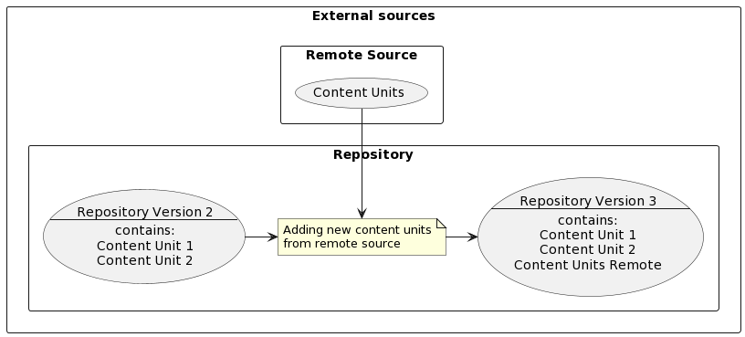

Concepts and Terminology¶
This introduction is designed for anyone who is familiar with software management even without prior knowledge of Pulp.
From a user’s perspective, Pulp is a tool to manage content. In this context, _Pulp_ refers to pulpcore and one or more content plugins.
What is pulpcore?¶
Throughout Pulp documentation, when you see references to _pulpcore_, this term refers to the main python program that provides a platform to which you add content plugins for the types of content that you want to manage. In a very general sense, Pulpcore refers to Pulp and its functionality without any plugins. Pulpcore provides a REST API and a Plugin API.
Content Management with plugins¶
To manage content, you need at least one content plugin. Each type of content unit, for example RPM or Debian, is defined by a plugin. For example, if you want to manage RPM content in Pulp, you must install the RPM plugin. Files that belong to a content unit are called Artifacts. Each content unit can have zero or many artifacts. Artifacts can be shared by multiple content units.

Content repositories and versioning¶
Content units in Pulp are organized by their membership in repositories. Repositories can only hold the content type that is defined by the plugin you install. You can add, remove and modify content in a repository. Each time the content of a repository is changed, a new Repository Version is created. Any operation such as sync that does not change the content set, does not produce a new repository version.


Pulling content into Pulp with Remotes¶
In Pulp, you can define external sources of content units, called Remotes. Through your plugin of choice, you can define actions to interact with those external sources. For example, most or all plugins define sync to fetch content units from a remote and add them to a Pulp repository.
Serving content with Pulp¶
Pulp provides a content app, which is an aiohttp.server that serves content through what in Pulp is referred to as a Distribution. Using this content app, you can serve all content that is managed with Pulp.
To serve content from Pulp, you need to create a publication and a distribution. A Publication consists of the metadata of the content set and the artifacts of each content unit in the content set. To host a publication, it must be assigned to a Distribution, which determines how and where a publication is served.